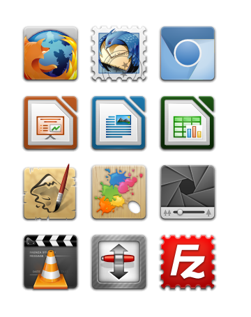

<div class="main wide green-background">
    <div class="text small-text background-gray">
        <h1 class="innertitle">Que aplicativos libres existen?</h1>
        <div>
        	<p>Estamos seguros de que xa usa software libre a diario e non o sabe...</p>
            <p>Programas como o navegador Firefox, a suite ofimática LibreOffice, o reprodutor VLC, o compresor 7-zip e moitos máis son software libre.</p>
			<p>Tamén cómpre salientar que moitos deles están dispoñíbeis para calquera sistema operativo que queira usar xa que teñen a virtude de seren multiplataforma; así que non dependerá de ningún sistema operativo que se poida ver obrigado a utilizar; e poderá continuar as súas tarefas coas mesmas ferramentas en GNU/Linux, en Windows e en Mac OS X tamén sen preocuparse de formatos de ficheiro, permisos nin licenzas de usuario. Os seus traballos non estarán cativos por terceiros, serán sempre seus porque o software libre garante de feito os seus dereitos.</p>
        </div>
    </div>

    
</div>
    
